Mijn naam is Joep Duwel en ik ben een Software Developer in opleiding aan het ROC Mondriaan.
Al vanaf jonge leeftijd was ik nieuwsgierig naar hoe websites en games gemaakt worden, en nu zet ik die passie om in toffe projecten met HTML, CSS, JavaScript en PHP
Mijn doel is om mezelf steeds verder te ontwikkelen in de IT-wereld, nieuwe technieken te leren en uiteindelijk te werken aan projecten die impact maken.
Ik bouw graag websites, webshops en interactieve functies met moderne webtechnologieën.
Naast mijn studie ben ik actief op het veld. Sport houdt me scherp, ook tijdens het coderen!
Ik ga altijd voor resultaat en blijf leren om mezelf te verbeteren — elke dag opnieuw.
Naast coderen heb ik een aantal hobbys die mij helpen om een goede balans te vinden tussen werk en ontspanning.
Ik ben een grote fan van verschillende autosporten, waaronder GT World Challenge, WEC, Formula Drift en Formule 1. Bovendien ben ik een echte autoliefhebber.
k heb veel LEGO-sets, vooral uit de Marvel en Speed Champions-series. Daar ben ik een fan van en het zijn ook mijn absolute favorieten om te bouwen en te verzamelen.
Mijn Hot Wheels-verzameling is nog vrij nieuw, maar het is erg leuk om op zoek te gaan naar mijn favoriete auto’s, vooral de zeldzame exemplaren die moeilijk te vinden zijn.
Muziek is iets waar ik bijna niet zonder kan. Het heeft me in het veel geholpen en doet dat soms nog steeds. Ik ben een grote fan van artiesten zoals Juice WRLD, Sleepy Hallow en nog veel meer.
Hier zijn een paar foto's van mij en mijn hobby's.
 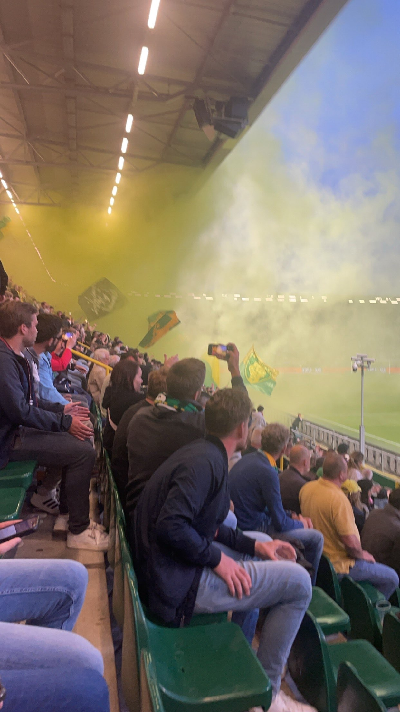
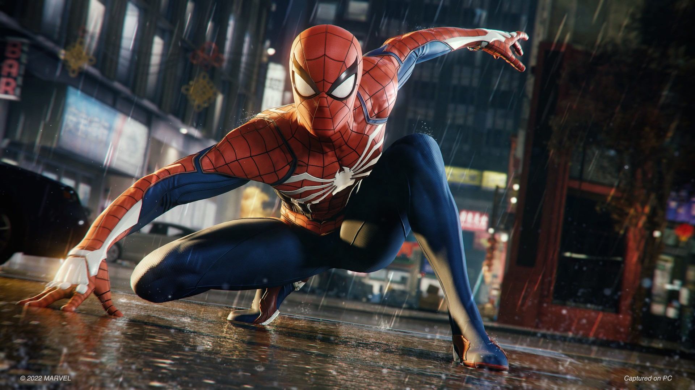
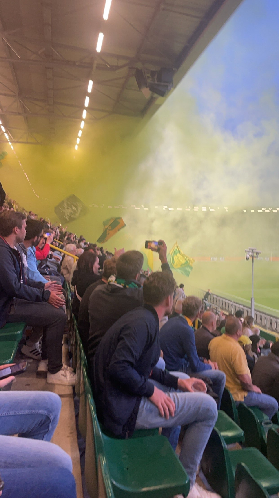
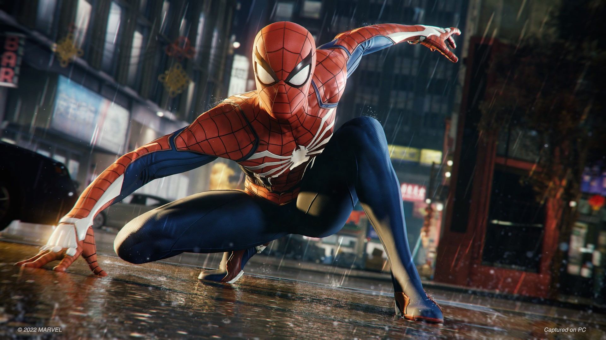
 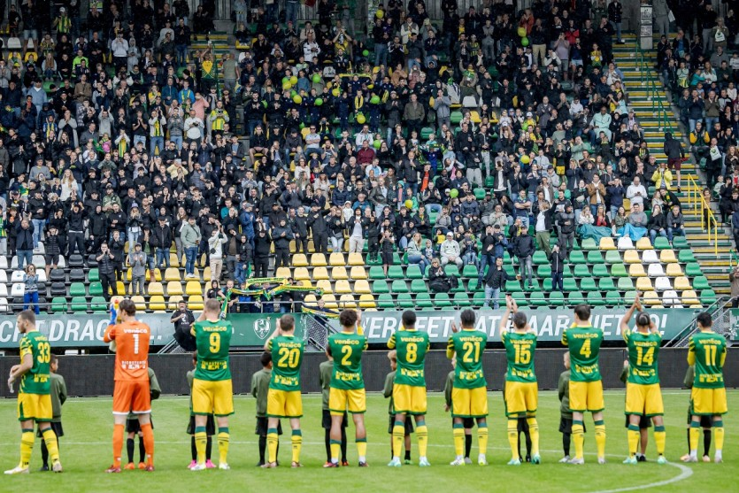
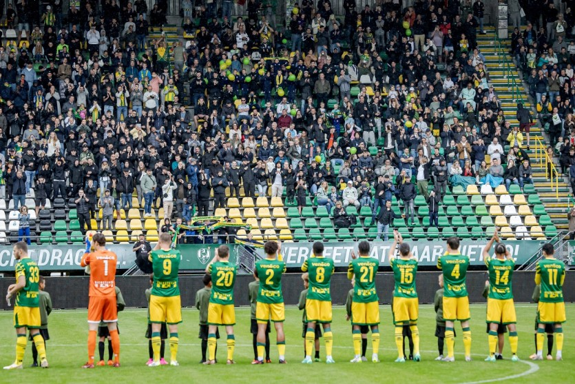

 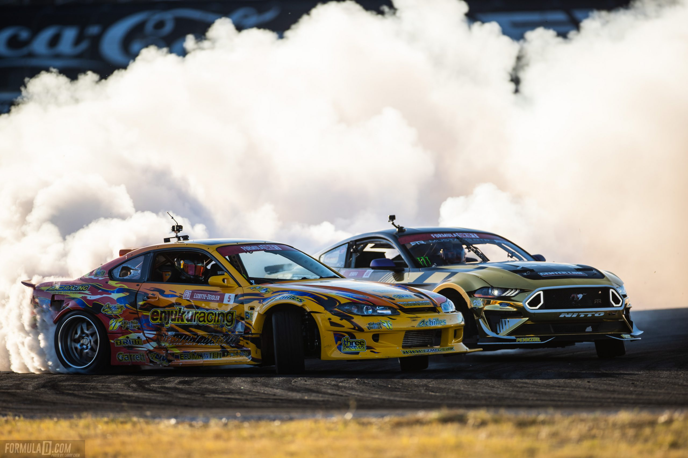
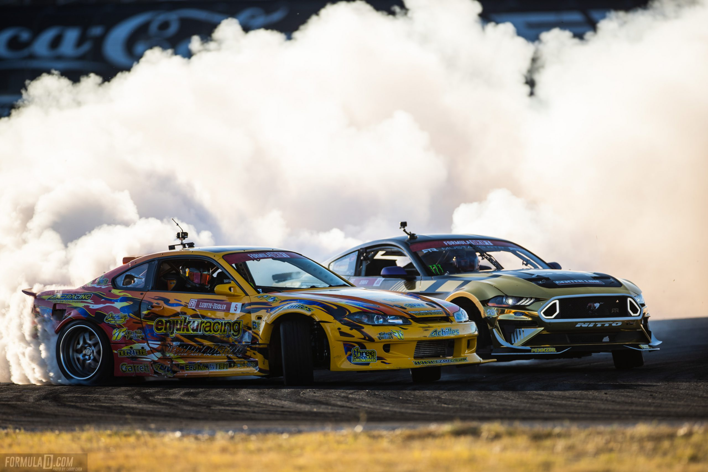
 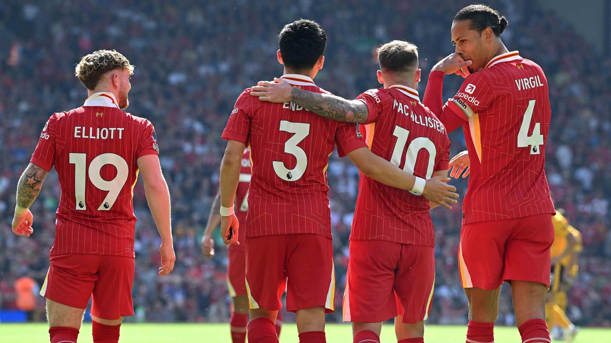
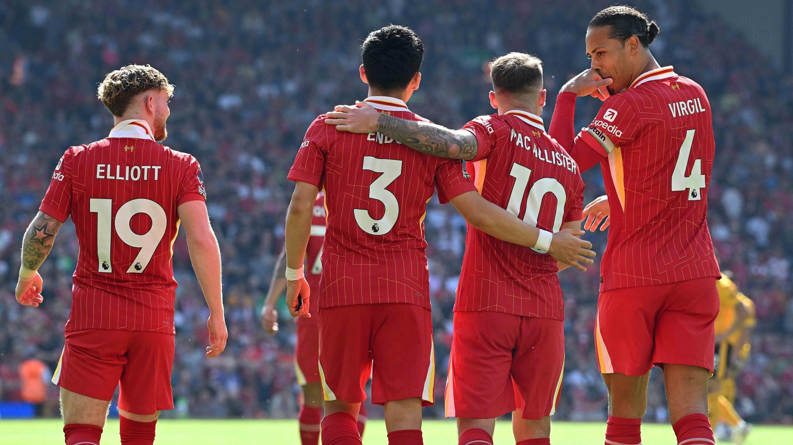


 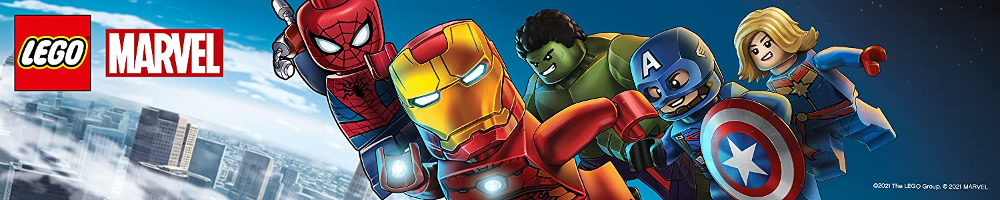
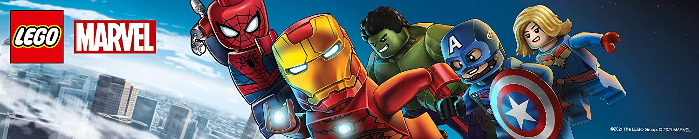